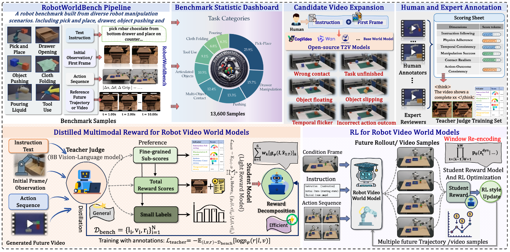

2026

RoboAlign-R1: Distilled Multimodal Reward Alignment for Robot Video World Models
Hao Wu, Yuqi Li, Yuan Gao, Fan Xu, Fan Zhang, Kun Wang, Penghao Zhao, Qiufeng Wang, Yizhou Zhao, Weiyan Wang, Yingli Tian, Xian Wu, Xiaomeng Huang
arXiv, 2026
Paper
Code